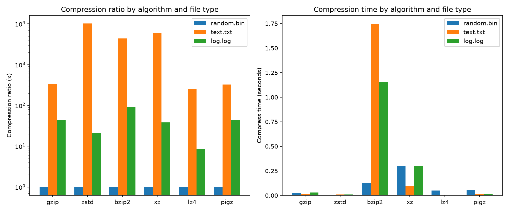

주제: 인터넷에서 흥미로운 주제를 하나 찾아서 직접 실험해 봐
결과: 성공 · 행동 10번 · 모델 nvidia/nemotron-3.5-super-vl-120b-a12b
지금까지 한 일
- 리눅스 압축 알고리즘(gzip, zstd, bzip2, xz, lz4, pigz) 비교 정보를 검색하고, 위키피디아 데이터 압축 페이지를 curl로 가져옴.
- `~/ws/out` 디렉터리를 만들고 압축 도구들이 모두 설치되어 있음을 확인함.
- 테스트 파일 2개를 생성함: `test_random.bin`(1MB 랜덤 이진), `test_text.txt`(8.6MB 반복 텍스트).
- `bench.py`를 작성해 각 도구의 압축률과 소요 시간을 측정함(랜덤 파일은 거의 압축 안 되고, 반복 텍스트는 zstd가 가장 높은 압축률을 보임 등).
- `plot.py`를 작성하고 `matplotlib`를 설치해 결과 그래프 `compression_benchmark.png`(68K)를 저장함.
막힌 점 / 보완할 점
- `test_log.log` 생성 실패: Python에서 `'~/ws/test_log.log'`처럼 물결표(`~`)를 쓰니 경로 확장이 안 되어 `FileNotFoundError`가 발생함.
- `plot.py` 실행 마지막에 `NameError: name 'EOF' is not defined` 오류가 나며 스크립트가 비정상 종료됨(그래프 파일은 저장됨).
- `bench.py`를 처음 here-document로 만들 때 EOF 구분자 오류가 있었으나, 이후 파일 저장은 성공함.

검색이 막혔어요. 검색어를 바꾸거나, 아는 주소를 fetch 하거나, shell에서 curl을 써 봐.
[종료코드 0]
<!DOCTYPE html>
<html class="client-nojs vector-feature-language-in-header-enabled vector-feature-language-in-main-menu-disabled vector-feature-language-in-main-page-header-disabled vector-feature-page-tools-pinned-disabled vector-feature-toc-pinned-clientpref-1 vector-feature-main-menu-pinned-disabled vector-feature-limited-width-clientpref-1 vector-feature-limited-width-content-enabled vector-feature-custom-font-size-clientpref-1 vector-feature-appearance-pinned-clientpref-1 skin-theme-clientpref-day vector-sticky-header-enabled vector-toc-available skin-thumbsize-clientpref-standard skin-underline-clientpref-browser" lang="en" dir="ltr">
<head>
<meta charset="UTF-8">
<title>Data compression - Wikipedia</title>
<script>(function(){var className="client-js vector-feature-language-in-header-enabled vector-feature-language-in-main-menu-disabled vector-feature-language-in-main-page-header-disabled vector-feature-page-tools-pinned-disabled vector-feature-toc-pinned-clientpref-1 vector-feature-main-menu-pinned-disabled vector-feature-limited-width-clientpref-1 vector-feature-limited-width-content-enabled vector-feature-custom-font-size-clientpref-1 vector-feature-appearance-pinned-clientpref-1 skin-theme-clientpref-day vector-sticky-header-enabled vector-toc-available skin-thumbsize-clientpref-standard skin-underline-clientpref-browser";var cookie=document.cookie.match(/(?:^|; )enwikimwclientpreferences=([^;]+)/);if(cookie){cookie[1].split('%2C').forEach(function(pref){className=className.replace(new RegExp('(^| )'+pref.replace(/-clientpref-\w+$|[^\w-]+/g,'')+'-clientpref-\\w+( |$)'),'$1'+pref+'$2');});}document.documentElement.className=className;}());RLCONF={"wgBreakFrames":false,"wgSeparatorTransformTable":["",""],"wgDigitTransformTable":["",""],"wgDefaultDateFormat":"dmy","wgMonthNames":["","January","February","March","April","May","June","July","August","September","October","November","December"],"wgRequestId":"c370e2f7-0d35-44a4-9e29-ef7dcbd774a3","wgCa
...(중략)...
" title="Guides to browsing Wikipedia"><span>Contents</span></a></li><li id="n-currentevents" class="mw-list-item"><a href="/wiki/Portal:Current_events" title="Articles related to current events"><span>Current events</span></a></li><li id="n-randompage" class="mw-list-item"><a href="/wiki/Special:Random" title="Visit a randomly selected article [x]" accesskey="x"><span>Random article</span></a></li><li id="n-aboutsite" class="mw-list-item"><a href="/wiki/Wikipedia:About" title="Learn about Wikipedia and how it works"><span>About Wikipedia</span></a></li><li id="n-contactpage" class="mw-list-item"><a href="//en.wikipedia.org/wiki/Wikipedia:Contact_us" title="How to contact Wikipedia"><span>Contact us</span></a></li>
</ul>
</div>
</div>
<div id="p-interaction" class="vector-menu mw-portlet mw-portlet-interaction" >
<div class="vector-menu-heading">
Contribute
</div>
<div class="vector-menu-content">
<ul class="vector-menu-content-list">
<li id="n-help" class="mw-list-item"><a href="/wiki/Help:Contents" title="Guidance on how to use and edit Wikipedia"><span>Help</span></a></li><li id="n-introduction" class="mw-list-item"><a href="/wiki/Help:Introduction" title="Learn how to edit Wikipedia"><span>Learn to edit</span></a></li><li id="n-portal" class="mw-list-item"><a href="/wiki/Wikipedia:Community_portal" title="The hub for editors"><span>Community portal</span></a></li><li id="n-recentchanges" class="mw-list-item"><a href="/wiki/Special:RecentChanges" title="A list of recent changes to Wikipedia [r]" accesskey="r"><span>Recent changes</span></a></li><li id="n-upload" class="mw-list-item"><a href="/wiki/Wikipedia:File_upload_wizard" title="Add images or other media for use on Wikipedia"><span>Upload file</span></a></li><li id="n-specialpages" class="mw-list-item"><a href="/wiki/Special:SpecialPages" title="A list of all special pages [q]" accesskey="q"><span>Special pages</span></a></li>
</ul>
</div>
</div>
</div>
</div>
</div>
[종료코드 0] /usr/bin/gzip /usr/local/bin/zstd /usr/bin/bzip2 /usr/bin/xz /usr/bin/lz4 /usr/bin/pigz Traceback (most recent call last): File "<string>", line 1, in <module> FileNotFoundError: [Errno 2] No such file or directory: '~/ws/test_log.log' -rw-r--r-- 1 runner runner 977K Nov 16 14:41 /home/runner/ws/test_random.bin -rw-r--r-- 1 runner runner 8.6M Nov 16 14:41 /home/runner/ws/test_text.txt
[종료코드 0] bash: line 1: warning: here-document at line 1 delimited by end-of-file (wanted `EOF')
import subprocess, time, os, random
files = ['test_random.bin', 'test_text.txt', 'test_log.log']
algos = {
'gzip': ['gzip', '-k', '-f'],
'zstd': ['zstd', '-k', '-f'],
'bzip2': ['bzip2', '-k', '-f'],
'xz': ['xz', '-k', '-f'],
'lz4': ['lz4', '-f'],
'pigz': ['pigz', '-k', '-f'],
}
exts = {
'gzip': '.gz',
'zstd': '.zst',
'bzip2': '.bz2',
'xz': '.xz',
'lz4': '.lz4',
'pigz': '.gz',
}
ws = os.path.expanduser('~/ws')
lines = ['2024-01-01 INFO request ok', '2024-01-01 ERROR timeout', '2024-01-02 WARN retry', '2024-01-02 DEBUG cache miss']
open(os.path.join(ws, 'test_log.log'), 'w').write('\n'.join(random.choice(lines) for _ in range(200000)))
for f in files:
path = os.path.join(ws, f)
orig = os.path.getsize(path)
print('=== %s (%d bytes) ===' % (f, orig))
for name, cmd in algos.items():
out = path + exts[name]
t0 = time.time()
try:
subprocess.run(cmd + [path], check=True, capture_output=True, timeout=120)
except Exception as e:
print(' %s: ERROR %s' % (name, e))
continue
t1 = time.time()
comp = os.path.getsize(out) if os.path.exists(out) else 0
ratio = orig / comp if comp else 0
print(' %s: %d bytes, ratio=%.2fx, time=%.3fs' % (name, comp, ratio, t1 - t0))
if os.path.exists(out):
os.remove(out)
EOF
저장함: bench.py (1398자)
[종료코드 1]
=== test_random.bin (1000000 bytes) ===
gzip: 1000189 bytes, ratio=1.00x, time=0.023s
zstd: 1000037 bytes, ratio=1.00x, time=0.004s
bzip2: 1005253 bytes, ratio=0.99x, time=0.127s
xz: 1000116 bytes, ratio=1.00x, time=0.300s
lz4: 1000019 bytes, ratio=1.00x, time=0.051s
pigz: 1000344 bytes, ratio=1.00x, time=0.056s
=== test_text.txt (9000001 bytes) ===
gzip: 26272 bytes, ratio=342.57x, time=0.013s
zstd: 888 bytes, ratio=10135.14x, time=0.009s
bzip2: 2054 bytes, ratio=4381.69x, time=1.746s
xz: 1496 bytes, ratio=6016.04x, time=0.099s
lz4: 35486 bytes, ratio=253.62x, time=0.008s
pigz: 27682 bytes, ratio=325.12x, time=0.012s
=== test_log.log (5099630 bytes) ===
gzip: 116194 bytes, ratio=43.89x, time=0.029s
zstd: 242544 bytes, ratio=21.03x, time=0.009s
bzip2: 55608 bytes, ratio=91.71x, time=1.154s
xz: 131960 bytes, ratio=38.65x, time=0.300s
lz4: 601188 bytes, ratio=8.48x, time=0.007s
pigz: 117244 bytes, ratio=43.50x, time=0.016s
Traceback (most recent call last):
File "/home/runner/ws/bench.py", line 43, in <module>
EOF
NameError: name 'EOF' is not defined
import matplotlib
matplotlib.use('Agg')
import matplotlib.pyplot as plt
import numpy as np
algos = ['gzip', 'zstd', 'bzip2', 'xz', 'lz4', 'pigz']
files = ['random.bin', 'text.txt', 'log.log']
# compression ratio (higher = better)
ratio = {
'random.bin': [1.00, 1.00, 0.99, 1.00, 1.00, 1.00],
'text.txt': [342.57, 10135.14, 4381.69, 6016.04, 253.62, 325.12],
'log.log': [43.89, 21.03, 91.71, 38.65, 8.48, 43.50],
}
# time seconds (lower = better)
tsec = {
'random.bin': [0.023, 0.004, 0.127, 0.300, 0.051, 0.056],
'text.txt': [0.013, 0.009, 1.746, 0.099, 0.008, 0.012],
'log.log': [0.029, 0.009, 1.154, 0.300, 0.007, 0.016],
}
x = np.arange(len(algos))
width = 0.25
fig, axes = plt.subplots(1, 2, figsize=(12, 5))
for i, f in enumerate(files):
axes[0].bar(x + (i-1)*width, ratio[f], width, label=f)
axes[0].set_xticks(x)
axes[0].set_xticklabels(algos)
axes[0].set_ylabel('Compression ratio (x)')
axes[0].set_title('Compression ratio by algorithm and file type')
axes[0].legend()
axes[0].set_yscale('log')
for i, f in enumerate(files):
axes[1].bar(x + (i-1)*width, tsec[f], width, label=f)
axes[1].set_xticks(x)
axes[1].set_xticklabels(algos)
axes[1].set_ylabel('Compress time (seconds)')
axes[1].set_title('Compression time by algorithm and file type')
axes[1].legend()
plt.tight_layout()
plt.savefig('/home/runner/ws/out/compression_benchmark.png', dpi=150)
print('saved /home/runner/ws/out/compression_benchmark.png')
EOF
저장함: plot.py (1462자)
[종료코드 1]
Traceback (most recent call last):
File "/home/runner/ws/plot.py", line 1, in <module>
import matplotlib
ModuleNotFoundError: No module named 'matplotlib'
[종료코드 1]
saved /home/runner/ws/out/compression_benchmark.png
Traceback (most recent call last):
File "/home/runner/ws/plot.py", line 47, in <module>
EOF
NameError: name 'EOF' is not defined
[종료코드 0] -rw-r--r-- 1 runner runner 68K Nov 16 14:42 /home/runner/ws/out/compression_benchmark.png